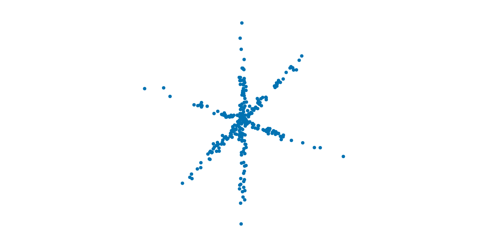

Quick start guide
Let's install SubspaceClustering and run our first subspace clustering algorithm!
Step 1: Install Julia
Go to https://julialang.org/downloads and install the current stable release.
To check your installation, open up Julia and try a simple calculation like 1+1:
julia> 1 + 12
More info: https://docs.julialang.org/en/v1/manual/getting-started/
Step 2: Install SubspaceClustering
SubspaceClustering can be installed using Julia's excellent builtin package manager.
julia> import Pkg; Pkg.add("SubspaceClustering")This downloads, installs, and precompiles SubspaceClustering (and all its dependencies). Don't worry if it takes a few minutes to complete.
Here we used the functional API for the builtin package manager. Pkg also has a very nice interactive interface (called the Pkg REPL) that is built right into the Julia REPL!
Learn more here: https://pkgdocs.julialang.org/v1/getting-started/
The package manager has excellent support for creating separate installation environments. We strongly recommend using environments to create isolated and reproducible setups.
Learn more here: https://pkgdocs.julialang.org/v1/environments/
Step 3: Run SubspaceClustering
Let's create a synthetic dataset of $N = 300$ data points that are clustered around $K = 3$ one-dimensional subspaces of $\mathbb{R}^2$. A simple way to do so is to:
Generate direction vectors $\bm{u}_1, \dots, \bm{u}_K \in \mathbb{R}^2$ for the clusters. Each $\bm{u}_j$ defines a corresponding one-dimensional subspace: $\operatorname{span}(\bm{u}_j) = \{ \alpha \bm{u}_j : \alpha \in \mathbb{R} \}$.
Generate cluster assignments $c_1, \dots, c_N \in \{1, \dots, K\}$ for the data points.
Generate each data point $\bm{x}_i \in \mathbb{R}^2$ by drawing a random point $\alpha_i \bm{u}_{c_i} \in \mathbb{R}^2$ from the corresponding cluster subspace and adding some small noise $0.05 \bm{\varepsilon}_i \in \mathbb{R}^2$:
\[\bm{x}_i = \alpha_i \bm{u}_{c_i} + 0.05 \bm{\varepsilon}_i \quad \text{where} \quad \alpha_i \sim \mathcal{N}(0,1) \quad \text{and} \quad \bm{\varepsilon}_i \sim \mathcal{N}(0, \bm{I}_2) .\]
The following code does exactly that:
julia> using LinearAlgebrajulia> N, K = 300, 3;julia> u = [normalize(randn(2)) for _ in 1:K] # direction vectors3-element Vector{Vector{Float64}}: [0.013627941912202547, 0.9999071352876915] [-0.6916638006151009, -0.722219625127062] [0.9362898483806509, -0.35122830156372303]julia> c = rand(1:K, N) # cluster assignments300-element Vector{Int64}: 2 3 ⋮ 2 1julia> x = [randn()*u[c[i]] + 0.05*randn(2) for i in 1:N] # data points300-element Vector{Vector{Float64}}: [-1.6588384558662461, -1.7229622428954021] [0.922800458701079, -0.33265180738324085] ⋮ [-0.3239672908168483, -0.42585465235312814] [-0.08709236586201438, -0.2633858598627404]
The resulting data points look like this:
Note how the data points cluster around three lines (i.e., three one-dimensional subspaces). This union-of-subspace structure (typically with higher-dimensional subspaces) is a common feature in modern data! Our goal is to cluster these data points by their corresponding subspace given only the data points (i.e., without knowing what the subspaces are). Subspace clustering algorithms allow us to do just that!
To cluster these data points, simply load the SubspaceClustering package and run one of the available algorithms. We'll use the K-subspaces (KSS) algorithm for this quick start guide.
julia> using SubspaceClusteringjulia> d = fill(1, K) # vector of subspace dimensions3-element Vector{Int64}: 1 1 1julia> X = stack(x) # data matrix (columns are data points)2×300 Matrix{Float64}: -1.65884 0.9228 1.07718 … 0.0586037 -0.323967 -0.0870924 -1.72296 -0.332652 -0.447092 -1.2481 -0.425855 -0.263386julia> result = kss(X, d)[ Info: Converged after 4 iterations. KSSResult{Vector{Matrix{Float64}}, Vector{Int64}, Float64}([[-0.6861178159137865; -0.72749044164559;;], [-0.9385764121649053; 0.34507146872445676;;], [-0.0003921160555333677; 0.9999999231224965;;]], [1, 2, 2, 1, 3, 1, 1, 3, 1, 3 … 1, 1, 3, 3, 1, 3, 2, 3, 1, 3], 4, 0.762794699055995, [116, 81, 103], true)
This returns a KSSResult containing the estimated subspace bases $\bm{\hat{U}}_1, \dots, \bm{\hat{U}}_K$, the cluster assignments $\hat{c}_1, \dots, \hat{c}_N$, and some metadata about the algorithm run.
We can extract each of these as follows:
julia> result.U3-element Vector{Matrix{Float64}}: [-0.6861178159137865; -0.72749044164559;;] [-0.9385764121649053; 0.34507146872445676;;] [-0.0003921160555333677; 0.9999999231224965;;]julia> result.c300-element Vector{Int64}: 1 2 ⋮ 1 3
To see how well kss clustered the data points, we plot these estimated subspaces results.U together with the data points colored by the estimated cluster assignments results.c (the uncolored data points seen by kss are shown on the left):
KSS did a pretty good job of estimating the underlying subspaces and clustering the data points by corresponding subspace!
Congratulations! You have successfully installed SubspaceClustering and run the KSS subspace clustering algorithm!
Next steps
Ready to learn more?
- To learn about the KSS algorithm used here, check out the K-subspaces (KSS) page.
- Explore the other algorithms in this package! KSS is perhaps the simplest method to understand, but typically not the best performing. Check out the Algorithms Overview page to start.
Want to understand the internals and possibly contribute? Check out the developer docs.